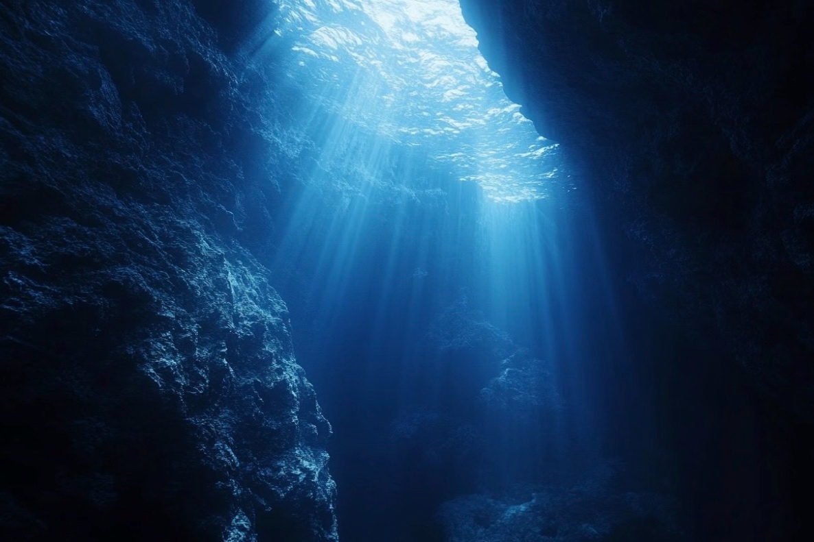
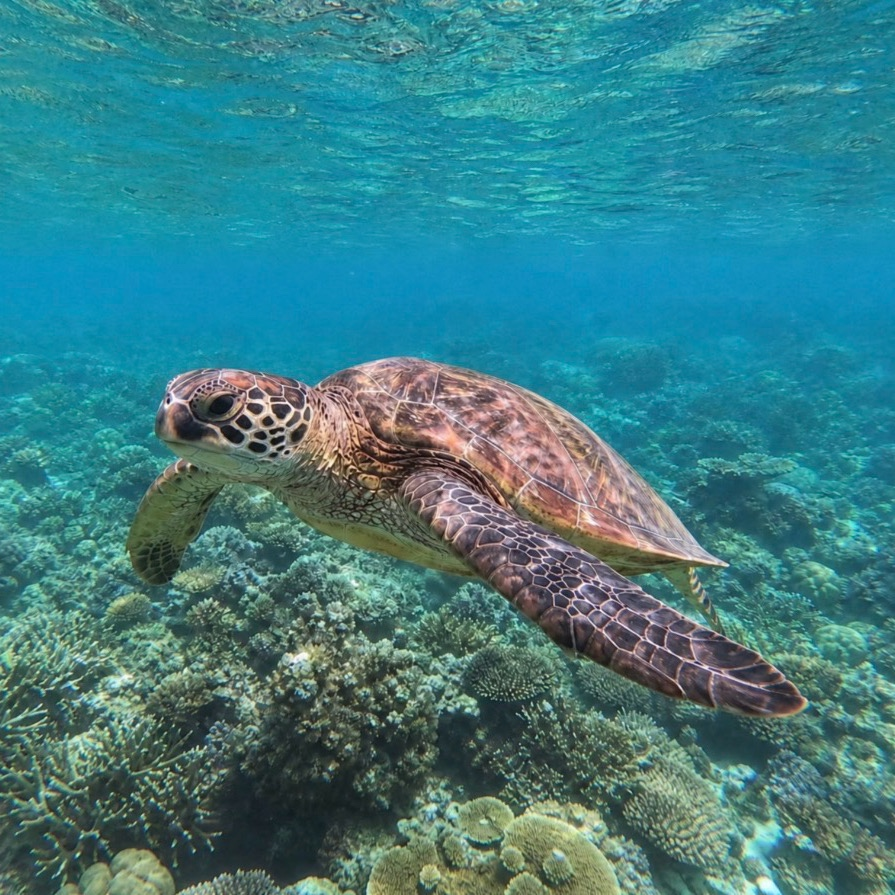
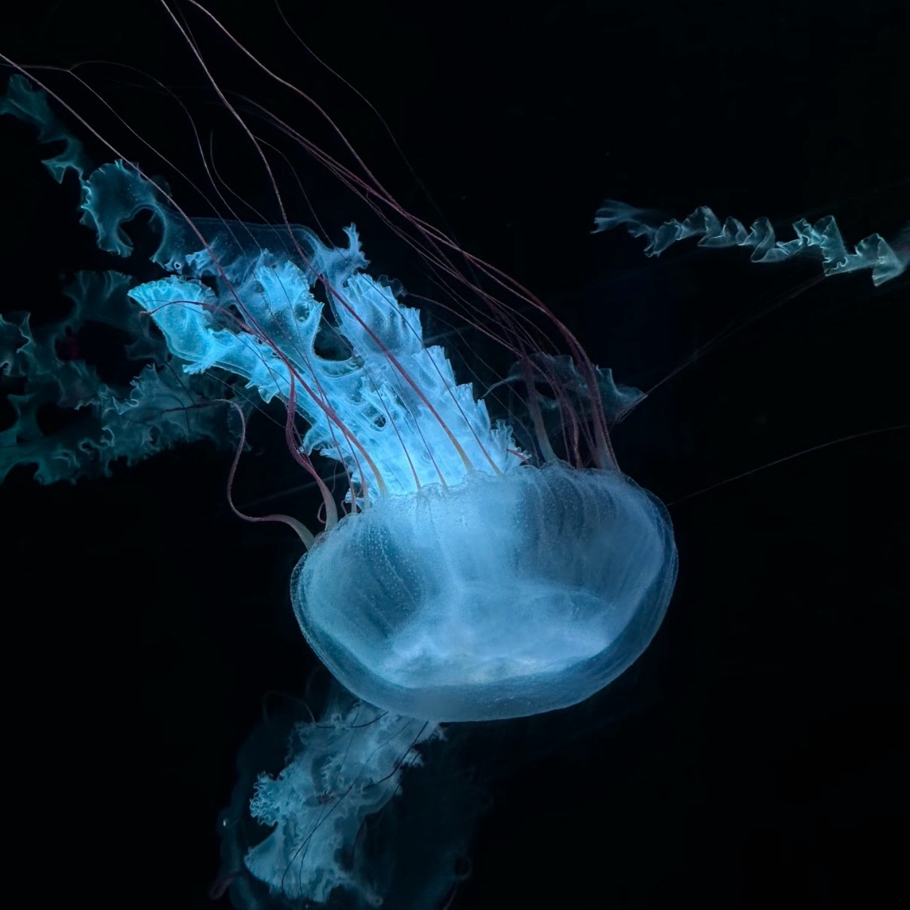
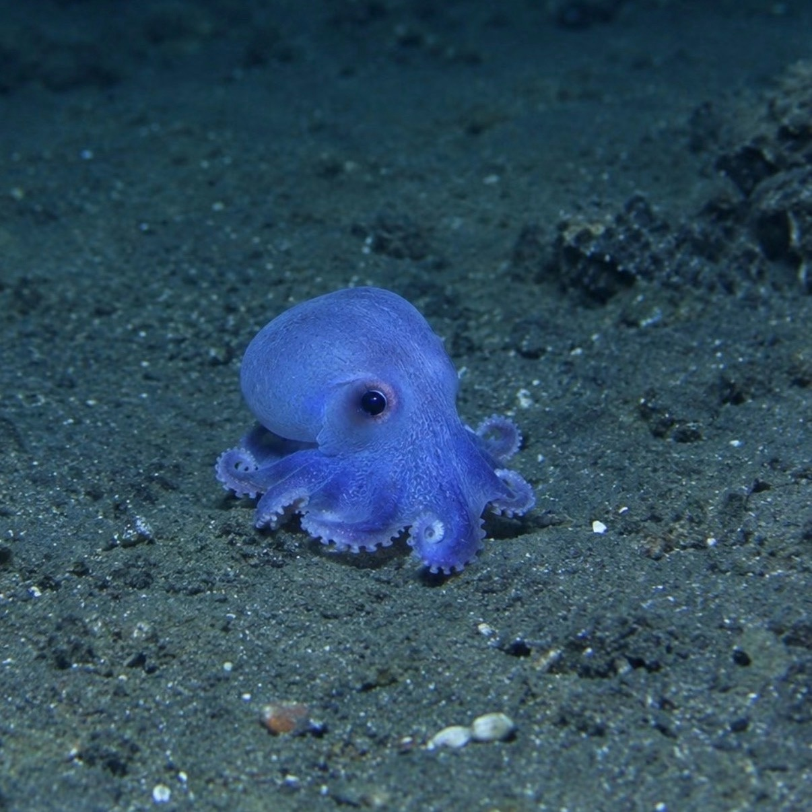
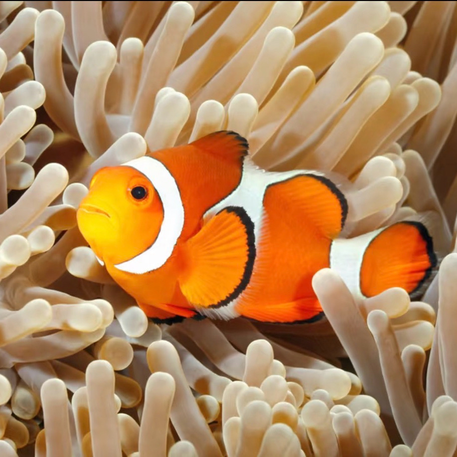
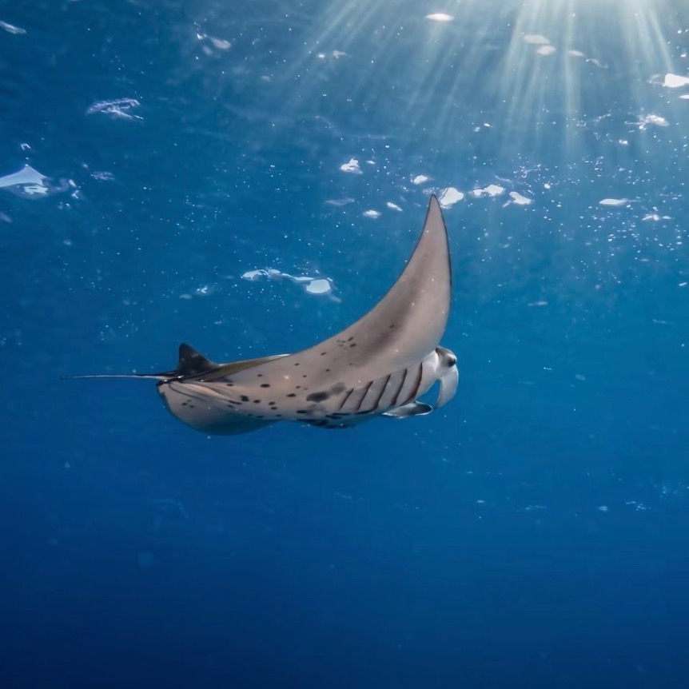
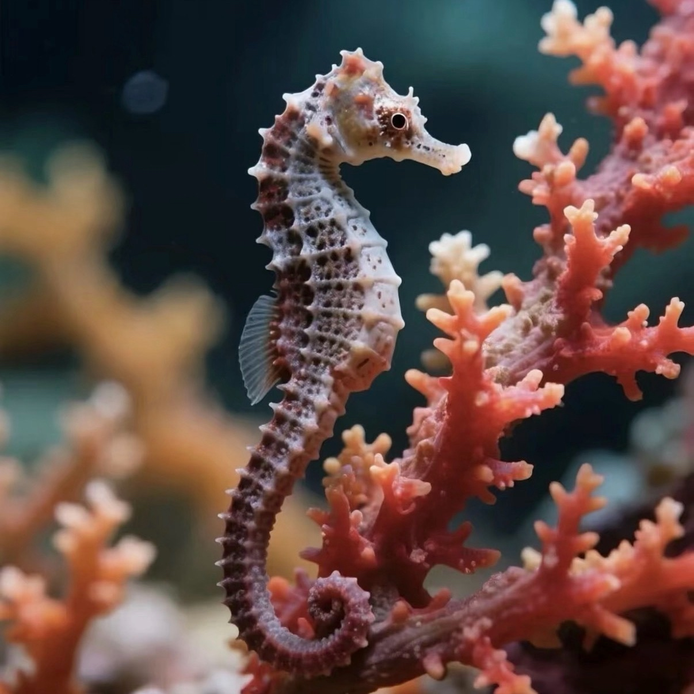

Ocean Wonders



Explore Marine Life

Sea Turtle
Sea turtles travel across the ocean and return to beaches to lay their eggs.
Fun Fact
Some sea turtles travel thousands of kilometres between feeding and nesting areas.

Jellyfish
Jellyfish drift through the water with soft, transparent bodies and long tentacles.
Fun Fact
Jellyfish have no brain or heart, but they can still respond to changes in their surroundings.

Octopus
Octopuses are intelligent sea animals known for their eight arms and flexible bodies.
Fun Fact
Octopuses have three hearts and can change their skin colour to blend into their environment.

Clownfish
Clownfish are colourful reef fish that live among the tentacles of sea anemones.
Fun Fact
A protective mucus coating helps clownfish live safely among the stinging tentacles of their host anemones.

Manta Ray
Manta rays glide gracefully through the ocean using their broad, wing-like fins.
Fun Fact
Despite their large size, manta rays feed mainly on tiny organisms called plankton.

Seahorse
Seahorses are small fish with curled tails and distinctive horse-shaped heads.
Fun Fact
Male seahorses carry developing eggs in a special pouch until the young are ready to be born.